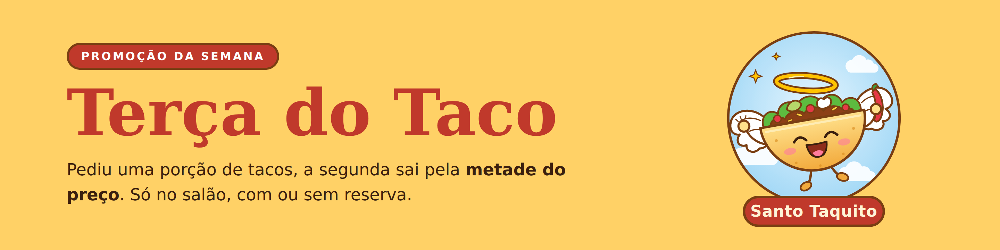
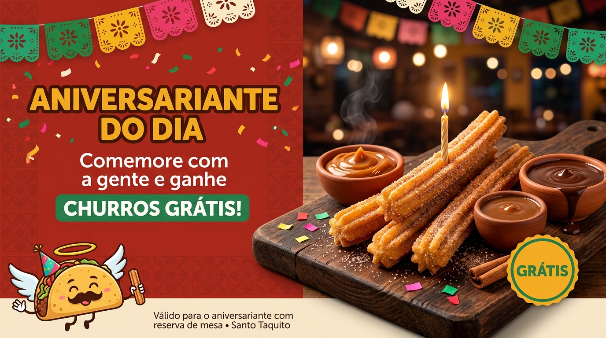
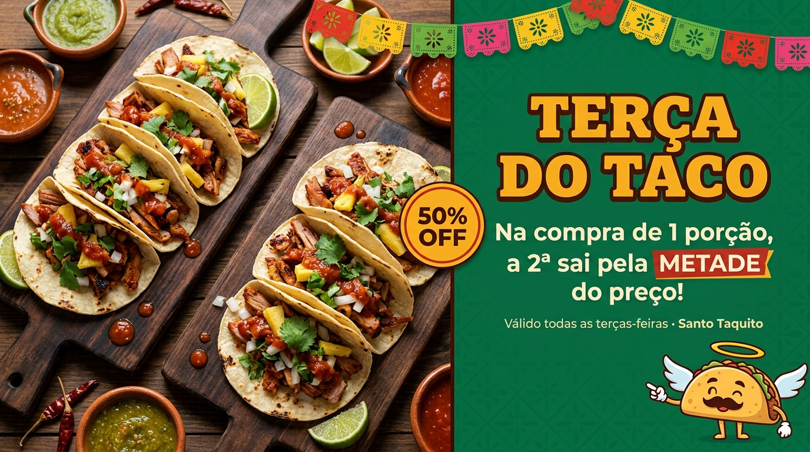
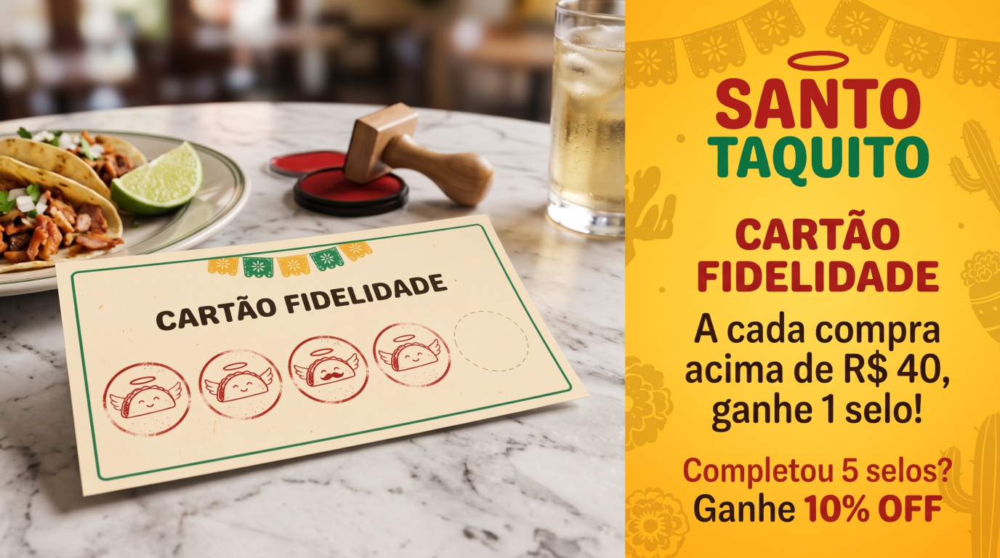

Churros grátis do Santo Taquito
pra você comemorar seu aniversario com agente!
Regras promocionais
*O aniversariante ganha uma porção de churros grátis, com um molho à escolha entre os disponíveis no dia.
*Válido somente para o aniversariante, com reserva de mesa prévia e apresentação de documento oficial com foto que comprove a data de nascimento no dia da visita.
*A gratuidade vale apenas para consumo no local, em mesa reservada, limitada a uma porção por aniversariante por dia.
*O benefício é pessoal e intransferível, não é cumulativo com outras promoções e não pode ser convertido em dinheiro ou desconto em outros itens.
*O Santo Taquito pode alterar ou encerrar a promoção a qualquer momento, mediante aviso em seus canais oficiais, e verificar o cumprimento das regras no momento do resgate.

Na compra de 1 porção a 2 sai pela metade do preçob!
Regras promocionais
*A promoção é válida todas as terças-feiras, no horário de funcionamento do Santo Taquito, e não é aplicada em feriados.
*O desconto de 50% incide sobre a porção de menor valor entre as duas e vale somente para porções de tacos.
*A promoção é válida apenas para consumo no local, não sendo aplicada a pedidos para viagem.
*O desconto não é cumulativo com outras promoções, cupons ou benefícios, e não pode ser convertido em dinheiro.
*O Santo Taquito pode alterar ou encerrar a promoção a qualquer momento, mediante aviso em seus canais oficiais, ficando garantidos os pedidos já realizados até o aviso.

Gastando 40$ com a gente você ganha um selo, completando tem direito a desconto!
Regras promocionais
*A cada compra acima de R$ 40, o cliente recebe 1 selo no Cartão Fidelidade, limitado a 1 selo por compra, e ao completar 5 selos tem direito a 10% de desconto.
*Válido todos os dias, no horário de funcionamento do Santo Taquito, apenas para compras realizadas e consumidas no local, não sendo aplicado a pedidos para viagem.
*O valor mínimo é calculado sobre o total da compra, sem considerar a taxa de serviço, e o selo só é concedido mediante pagamento da conta.
*O desconto de 10% vale para uma única compra, incide sobre o valor total da conta, não é cumulativo com outras promoções, cupons ou benefícios e não pode ser convertido em dinheiro. Após o uso, o cartão é encerrado e um novo pode ser iniciado.
*O cartão é pessoal, intransferível e não substituível em caso de perda ou dano. O Santo Taquito pode alterar ou encerrar a promoção a qualquer momento, mediante aviso em seus canais oficiais, ficando garantidos os selos já acumulados.